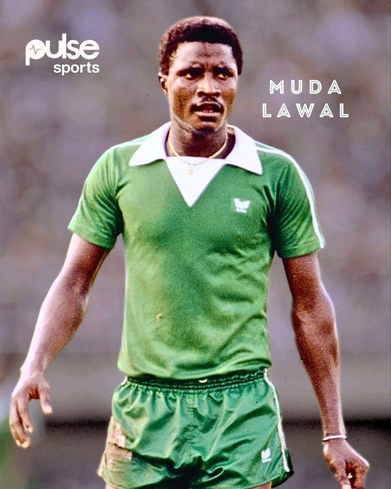
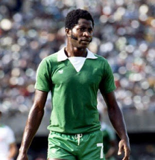
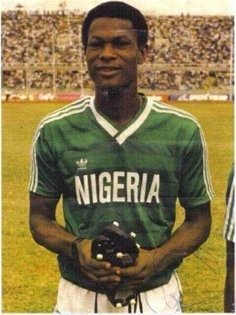
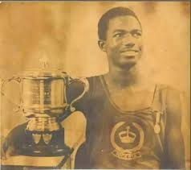
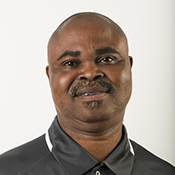
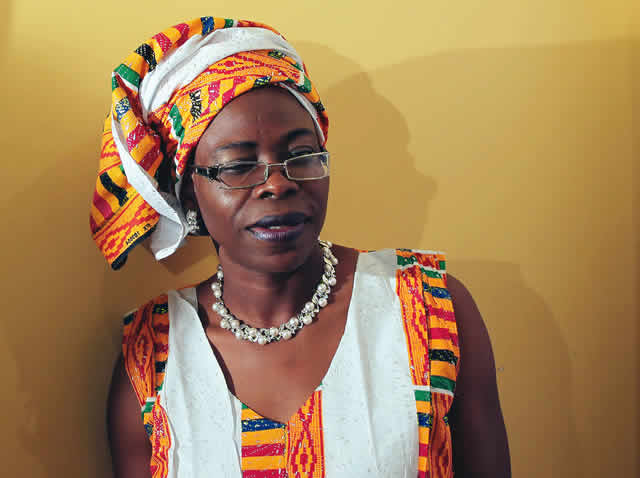
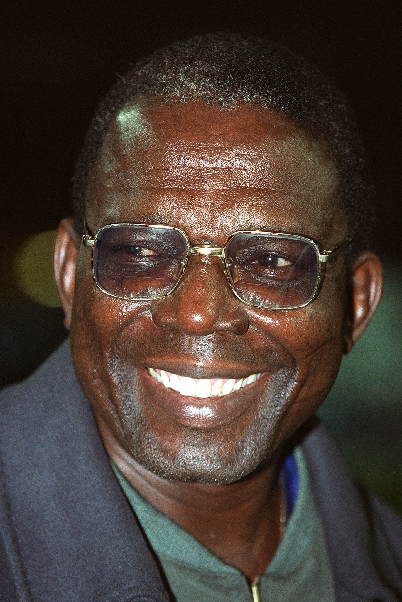
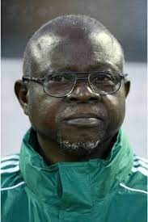
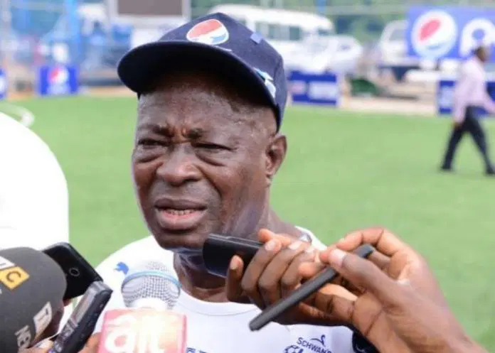

Mudashiru Babatunde Lawal
FORMER SUPER EAGLES
Muda Lawal Was the first African and Nigerian to feature at 5 African Nations Cup (1976-84) In the 1980 triumph, he scored Nigeria's first and last goal in the tournament. At club level, he played for Shooting Stars, Stationery Stores FC, and Abiola Babes

Segun Odegbami AKA Mathematical Odegbami
Former Super Eagles
Segun Odegbami AKA Mathematical Odegbami was Nigeria’s first nationwide football star. Tall, elegant in movement on the pitch and fleet of feet on the ball. Segun Odegbami was that player who never polarised opinion amongst Nigerian football fans in the mid-70s to the early 80s.

Ademola Adeshina
Former Super Eagles
International Career Ademola Adeshina was a key member of the Nigerian national team, the Super Eagles, from the early 1980s through the early 1990s. He represented Nigeria in three consecutive Africa Cup of Nations (AFCON) tournaments—1984 (Ivory Coast), 1988 (Morocco), and 1990 (Algeria).

Josiah Majekodunmi
Athlete
Josiah Olutunji Majekodunmi was an athlete from Nigeria. He competed at the 1950 British Empire Games at Auckland, New Zealand where he won Nigeria's first medal in any international sports, a silver medal in the Men's High Jump event.

Mike Akinlotan
Player Development Coach
As a youth growing up in Nigeria, I represented and played at the 1983 U21 FIFA World Cup in Mexico for Nigeria in a group that included: Brazil, Holland, and Russia. I played against Holland’s Marco Van Basten and Brazilian legends Dunga and Bebeto. I also represented the Nigeria Men’s National Team at the 1988 Olympic game qualifiers. I studied Physical Education at Brooklyn College in New York City, and also played for their soccer team. After college, I was drafted by the Boston Bolts FC to play professionally in the inaugural season of the (APSL) American Professional Soccer League. I went on to be selected as an All Star alongside players like Jorge Acosta, Paul Riley, Jean Harbor and Brian Ainsclough.

Falilat Ogunkoya-Osheku
Nigerian former track and field athlete
Falilat Ogunkoya-Osheku (born 5 December 1968 in Ode Lemo, Ogun State, Nigeria)[1] is a Nigerian former track and field athlete who holds the distinction of becoming the first Nigerian to win an individual track and field medal at the Olympic Games.[2]Ogunkoya has won a number of national championships, including a gold medal in 1996 in the 400 metres, gold in the 200 metres and 400 m in 1998, and gold again in 1999 and 2001 in the 400 m. At the 1987 All Africa Games in Nairobi she won the silver medal in the 200 m. In 1995 at the All Africa Games in Harare she won the silver in the 400 m, and at the 1999 Games in Johannesburg she won a gold medal in the 400 m.

Festus Onigbinde
Nigerian former association football manager
Festus Onigbinde (born 20 October 1938) is a Nigerian former association football manager. He was the head coach of the Nigeria national team during the 1984 African Cup of Nations, where he led the team to the final before losing to Cameroon by 3-1. He was also the head coach of the Nigeria national team during the 1998 FIFA World Cup held in France.

Yemi Tella
Nigerian former football under 17 coach
Yemi Tella (c. 1951 – 20 October 2007) was the coach of the Nigerian football team that won the 2007 FIFA U-17 World Cup.[1] He was awarded the title of 2007 African coach of the year.[2] Tella, a former lecturer at the National Institute for Sports in Lagos, had been diagnosed with lung cancer when he led his team to a pre-World Cup eight-nation tournament in South Korea in June 2007. A month before his death, he was awarded the Member of the Order of the Federal Republic medal - an important honour - for his achievement, by the Nigerian president Umaru Yar'Adua. [3] Tella spent the last two weeks of his life at the Lagos State Teaching Hospital. He died on 20 October 2007, aged 56.
.jpg)
Tunde Disu
Nigerian former football coach
Coach Tunde Disu. One of the great football coaches in Africa, his best moments was guiding the Nigeria Flying Eagles ( Miracle of Damman) at FIFA U20 World Youth Championship in Riyadh, Saudi Arabia.

Kashimawo Laloko
A Teacher and a Football Coach
Kashimawo Laloko was a prominent Nigerian football coach, technical director of the Nigeria Football Federation (NFF), and founder of the highly successful Pepsi Football Academy. He died on March 28, 2021, at the age of 76 after a brief illness.